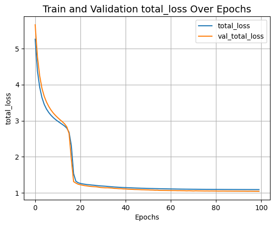
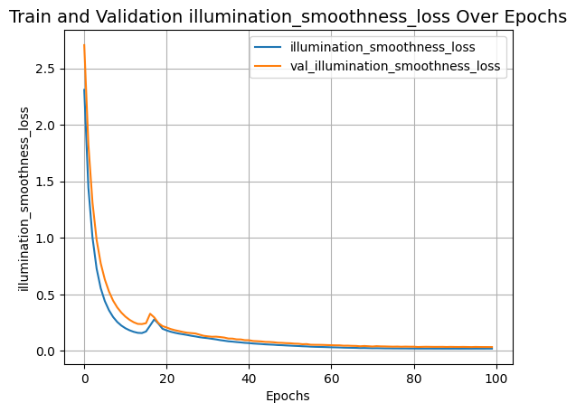
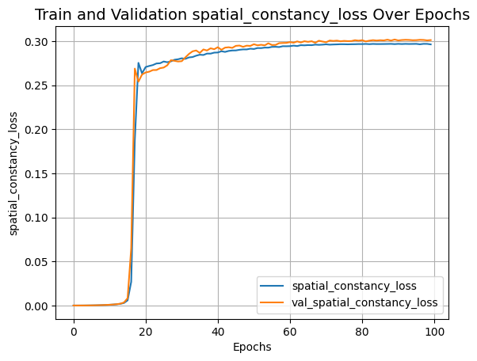
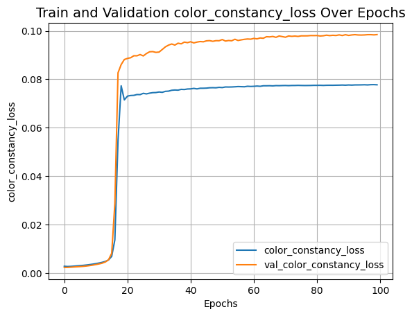
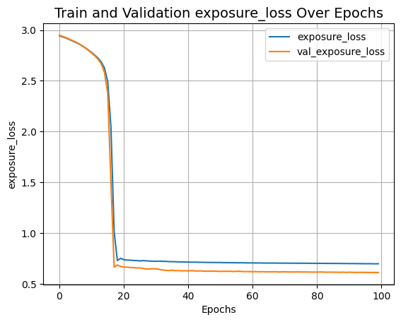
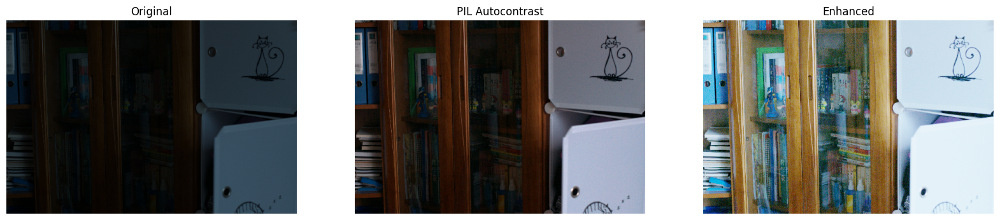
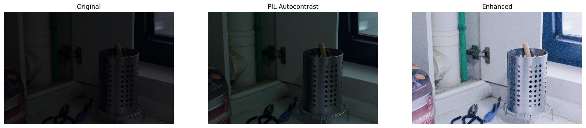
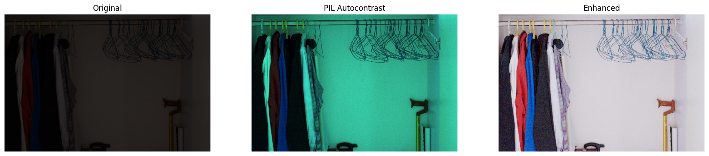
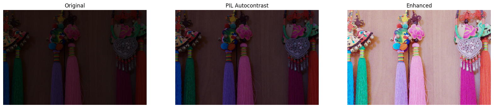
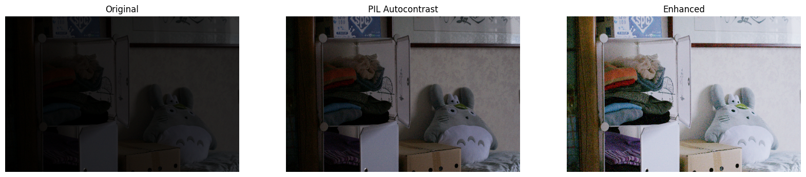

Zero-DCE for low-light image enhancement
Author: Soumik Rakshit
Date created: 2021/09/18
Last modified: 2023/07/15
Description: Implementing Zero-Reference Deep Curve Estimation for low-light image enhancement.

Introduction
Zero-Reference Deep Curve Estimation or Zero-DCE formulates low-light image enhancement as the task of estimating an image-specific tonal curve with a deep neural network. In this example, we train a lightweight deep network, DCE-Net, to estimate pixel-wise and high-order tonal curves for dynamic range adjustment of a given image.
Zero-DCE takes a low-light image as input and produces high-order tonal curves as its output. These curves are then used for pixel-wise adjustment on the dynamic range of the input to obtain an enhanced image. The curve estimation process is done in such a way that it maintains the range of the enhanced image and preserves the contrast of neighboring pixels. This curve estimation is inspired by curves adjustment used in photo editing software such as Adobe Photoshop where users can adjust points throughout an image’s tonal range.
Zero-DCE is appealing because of its relaxed assumptions with regard to reference images: it does not require any input/output image pairs during training. This is achieved through a set of carefully formulated non-reference loss functions, which implicitly measure the enhancement quality and guide the training of the network.
References
- Zero-Reference Deep Curve Estimation for Low-Light Image Enhancement
- Curves adjustment in Adobe Photoshop
Downloading LOLDataset
The LoL Dataset has been created for low-light image enhancement. It provides 485 images for training and 15 for testing. Each image pair in the dataset consists of a low-light input image and its corresponding well-exposed reference image.
import os
os.environ["KERAS_BACKEND"] = "tensorflow"
import random
import numpy as np
from glob import glob
from PIL import Image, ImageOps
import matplotlib.pyplot as plt
import keras
from keras import layers
import tensorflow as tf
!wget https://huggingface.co/datasets/geekyrakshit/LoL-Dataset/resolve/main/lol_dataset.zip
!unzip -q lol_dataset.zip && rm lol_dataset.zip
--2023-11-20 20:01:50-- https://huggingface.co/datasets/geekyrakshit/LoL-Dataset/resolve/main/lol_dataset.zip
Resolving huggingface.co (huggingface.co)... 3.163.189.74, 3.163.189.90, 3.163.189.114, ...
Connecting to huggingface.co (huggingface.co)|3.163.189.74|:443... connected.
HTTP request sent, awaiting response... 302 Found
Location: https://cdn-lfs.huggingface.co/repos/d9/09/d909ef7668bb417b7065a311bd55a3084cc83a1f918e13cb41c5503328432db2/419fddc48958cd0f5599939ee0248852a37ceb8bb738c9b9525e95b25a89de9a?response-content-disposition=attachment%3B+filename*%3DUTF-8%27%27lol_dataset.zip%3B+filename%3D%22lol_dataset.zip%22%3B&response-content-type=application%2Fzip&Expires=1700769710&Policy=eyJTdGF0ZW1lbnQiOlt7IkNvbmRpdGlvbiI6eyJEYXRlTGVzc1RoYW4iOnsiQVdTOkVwb2NoVGltZSI6MTcwMDc2OTcxMH19LCJSZXNvdXJjZSI6Imh0dHBzOi8vY2RuLWxmcy5odWdnaW5nZmFjZS5jby9yZXBvcy9kOS8wOS9kOTA5ZWY3NjY4YmI0MTdiNzA2NWEzMTFiZDU1YTMwODRjYzgzYTFmOTE4ZTEzY2I0MWM1NTAzMzI4NDMyZGIyLzQxOWZkZGM0ODk1OGNkMGY1NTk5OTM5ZWUwMjQ4ODUyYTM3Y2ViOGJiNzM4YzliOTUyNWU5NWIyNWE4OWRlOWE%7EcmVzcG9uc2UtY29udGVudC1kaXNwb3NpdGlvbj0qJnJlc3BvbnNlLWNvbnRlbnQtdHlwZT0qIn1dfQ__&Signature=VPqHlt0h6mUV7D3alDMIO61VSvUX498wZn5rIpo4u5yTYOu2s9CbO82xeGfrZguIuENVO6yiuoUAlZO4XXDsGC0Gc3MR3KIoTGuI9URA815nrdvFE616XBooGAW200KOUmVj2IoySAufi-7ORPuspaVJoKqWr8wytt0hDpNMeaWSg766kVMkJB1Aywq6yu5KHFGkqvOPDWNZZO6yfOtdX2XfbXVuiaiUlS03gRZ58H9pYn535TrE3BYP4W1u%7EehJ4OACpsRsnrsrXDr--PLH5RsxApOR2neFLySta3LiN9mtdjSpOKGn0oUapDfCWG7Ik5OMB5PGGzQBTB5J0b0O9g__&Key-Pair-Id=KVTP0A1DKRTAX [following]
--2023-11-20 20:01:50-- https://cdn-lfs.huggingface.co/repos/d9/09/d909ef7668bb417b7065a311bd55a3084cc83a1f918e13cb41c5503328432db2/419fddc48958cd0f5599939ee0248852a37ceb8bb738c9b9525e95b25a89de9a?response-content-disposition=attachment%3B+filename*%3DUTF-8%27%27lol_dataset.zip%3B+filename%3D%22lol_dataset.zip%22%3B&response-content-type=application%2Fzip&Expires=1700769710&Policy=eyJTdGF0ZW1lbnQiOlt7IkNvbmRpdGlvbiI6eyJEYXRlTGVzc1RoYW4iOnsiQVdTOkVwb2NoVGltZSI6MTcwMDc2OTcxMH19LCJSZXNvdXJjZSI6Imh0dHBzOi8vY2RuLWxmcy5odWdnaW5nZmFjZS5jby9yZXBvcy9kOS8wOS9kOTA5ZWY3NjY4YmI0MTdiNzA2NWEzMTFiZDU1YTMwODRjYzgzYTFmOTE4ZTEzY2I0MWM1NTAzMzI4NDMyZGIyLzQxOWZkZGM0ODk1OGNkMGY1NTk5OTM5ZWUwMjQ4ODUyYTM3Y2ViOGJiNzM4YzliOTUyNWU5NWIyNWE4OWRlOWE%7EcmVzcG9uc2UtY29udGVudC1kaXNwb3NpdGlvbj0qJnJlc3BvbnNlLWNvbnRlbnQtdHlwZT0qIn1dfQ__&Signature=VPqHlt0h6mUV7D3alDMIO61VSvUX498wZn5rIpo4u5yTYOu2s9CbO82xeGfrZguIuENVO6yiuoUAlZO4XXDsGC0Gc3MR3KIoTGuI9URA815nrdvFE616XBooGAW200KOUmVj2IoySAufi-7ORPuspaVJoKqWr8wytt0hDpNMeaWSg766kVMkJB1Aywq6yu5KHFGkqvOPDWNZZO6yfOtdX2XfbXVuiaiUlS03gRZ58H9pYn535TrE3BYP4W1u%7EehJ4OACpsRsnrsrXDr--PLH5RsxApOR2neFLySta3LiN9mtdjSpOKGn0oUapDfCWG7Ik5OMB5PGGzQBTB5J0b0O9g__&Key-Pair-Id=KVTP0A1DKRTAX
Resolving cdn-lfs.huggingface.co (cdn-lfs.huggingface.co)... 108.138.94.122, 108.138.94.25, 108.138.94.14, ...
Connecting to cdn-lfs.huggingface.co (cdn-lfs.huggingface.co)|108.138.94.122|:443... connected.
HTTP request sent, awaiting response... 200 OK
Length: 347171015 (331M) [application/zip]
Saving to: ‘lol_dataset.zip’
lol_dataset.zip 100%[===================>] 331.09M 37.4MB/s in 9.5s
2023-11-20 20:02:00 (34.9 MB/s) - ‘lol_dataset.zip’ saved [347171015/347171015]
Creating a TensorFlow Dataset
We use 300 low-light images from the LoL Dataset training set for training, and we use
the remaining 185 low-light images for validation. We resize the images to size 256 x
256 to be used for both training and validation. Note that in order to train the DCE-Net,
we will not require the corresponding enhanced images.
IMAGE_SIZE = 256
BATCH_SIZE = 16
MAX_TRAIN_IMAGES = 400
def load_data(image_path):
image = tf.io.read_file(image_path)
image = tf.image.decode_png(image, channels=3)
image = tf.image.resize(images=image, size=[IMAGE_SIZE, IMAGE_SIZE])
image = image / 255.0
return image
def data_generator(low_light_images):
dataset = tf.data.Dataset.from_tensor_slices((low_light_images))
dataset = dataset.map(load_data, num_parallel_calls=tf.data.AUTOTUNE)
dataset = dataset.batch(BATCH_SIZE, drop_remainder=True)
return dataset
train_low_light_images = sorted(glob("./lol_dataset/our485/low/*"))[:MAX_TRAIN_IMAGES]
val_low_light_images = sorted(glob("./lol_dataset/our485/low/*"))[MAX_TRAIN_IMAGES:]
test_low_light_images = sorted(glob("./lol_dataset/eval15/low/*"))
train_dataset = data_generator(train_low_light_images)
val_dataset = data_generator(val_low_light_images)
print("Train Dataset:", train_dataset)
print("Validation Dataset:", val_dataset)
Train Dataset: <_BatchDataset element_spec=TensorSpec(shape=(16, 256, 256, 3), dtype=tf.float32, name=None)>
Validation Dataset: <_BatchDataset element_spec=TensorSpec(shape=(16, 256, 256, 3), dtype=tf.float32, name=None)>
The Zero-DCE Framework
The goal of DCE-Net is to estimate a set of best-fitting light-enhancement curves (LE-curves) given an input image. The framework then maps all pixels of the input’s RGB channels by applying the curves iteratively to obtain the final enhanced image.
Understanding light-enhancement curves
A ligh-enhancement curve is a kind of curve that can map a low-light image to its enhanced version automatically, where the self-adaptive curve parameters are solely dependent on the input image. When designing such a curve, three objectives should be taken into account:
- Each pixel value of the enhanced image should be in the normalized range
[0,1], in order to avoid information loss induced by overflow truncation. - It should be monotonous, to preserve the contrast between neighboring pixels.
- The shape of this curve should be as simple as possible, and the curve should be differentiable to allow backpropagation.
The light-enhancement curve is separately applied to three RGB channels instead of solely on the illumination channel. The three-channel adjustment can better preserve the inherent color and reduce the risk of over-saturation.

DCE-Net
The DCE-Net is a lightweight deep neural network that learns the mapping between an input image and its best-fitting curve parameter maps. The input to the DCE-Net is a low-light image while the outputs are a set of pixel-wise curve parameter maps for corresponding higher-order curves. It is a plain CNN of seven convolutional layers with symmetrical concatenation. Each layer consists of 32 convolutional kernels of size 3×3 and stride 1 followed by the ReLU activation function. The last convolutional layer is followed by the Tanh activation function, which produces 24 parameter maps for 8 iterations, where each iteration requires three curve parameter maps for the three channels.

def build_dce_net():
input_img = keras.Input(shape=[None, None, 3])
conv1 = layers.Conv2D(
32, (3, 3), strides=(1, 1), activation="relu", padding="same"
)(input_img)
conv2 = layers.Conv2D(
32, (3, 3), strides=(1, 1), activation="relu", padding="same"
)(conv1)
conv3 = layers.Conv2D(
32, (3, 3), strides=(1, 1), activation="relu", padding="same"
)(conv2)
conv4 = layers.Conv2D(
32, (3, 3), strides=(1, 1), activation="relu", padding="same"
)(conv3)
int_con1 = layers.Concatenate(axis=-1)([conv4, conv3])
conv5 = layers.Conv2D(
32, (3, 3), strides=(1, 1), activation="relu", padding="same"
)(int_con1)
int_con2 = layers.Concatenate(axis=-1)([conv5, conv2])
conv6 = layers.Conv2D(
32, (3, 3), strides=(1, 1), activation="relu", padding="same"
)(int_con2)
int_con3 = layers.Concatenate(axis=-1)([conv6, conv1])
x_r = layers.Conv2D(24, (3, 3), strides=(1, 1), activation="tanh", padding="same")(
int_con3
)
return keras.Model(inputs=input_img, outputs=x_r)
Loss functions
To enable zero-reference learning in DCE-Net, we use a set of differentiable zero-reference losses that allow us to evaluate the quality of enhanced images.
Color constancy loss
The color constancy loss is used to correct the potential color deviations in the enhanced image.
def color_constancy_loss(x):
mean_rgb = tf.reduce_mean(x, axis=(1, 2), keepdims=True)
mr, mg, mb = (
mean_rgb[:, :, :, 0],
mean_rgb[:, :, :, 1],
mean_rgb[:, :, :, 2],
)
d_rg = tf.square(mr - mg)
d_rb = tf.square(mr - mb)
d_gb = tf.square(mb - mg)
return tf.sqrt(tf.square(d_rg) + tf.square(d_rb) + tf.square(d_gb))
Exposure loss
To restrain under-/over-exposed regions, we use the exposure control loss.
It measures the distance between the average intensity value of a local region
and a preset well-exposedness level (set to 0.6).
def exposure_loss(x, mean_val=0.6):
x = tf.reduce_mean(x, axis=3, keepdims=True)
mean = tf.nn.avg_pool2d(x, ksize=16, strides=16, padding="VALID")
return tf.reduce_mean(tf.square(mean - mean_val))
Illumination smoothness loss
To preserve the monotonicity relations between neighboring pixels, the illumination smoothness loss is added to each curve parameter map.
def illumination_smoothness_loss(x):
batch_size = tf.shape(x)[0]
h_x = tf.shape(x)[1]
w_x = tf.shape(x)[2]
count_h = (tf.shape(x)[2] - 1) * tf.shape(x)[3]
count_w = tf.shape(x)[2] * (tf.shape(x)[3] - 1)
h_tv = tf.reduce_sum(tf.square((x[:, 1:, :, :] - x[:, : h_x - 1, :, :])))
w_tv = tf.reduce_sum(tf.square((x[:, :, 1:, :] - x[:, :, : w_x - 1, :])))
batch_size = tf.cast(batch_size, dtype=tf.float32)
count_h = tf.cast(count_h, dtype=tf.float32)
count_w = tf.cast(count_w, dtype=tf.float32)
return 2 * (h_tv / count_h + w_tv / count_w) / batch_size
Spatial consistency loss
The spatial consistency loss encourages spatial coherence of the enhanced image by preserving the contrast between neighboring regions across the input image and its enhanced version.
class SpatialConsistencyLoss(keras.losses.Loss):
def __init__(self, **kwargs):
super().__init__(reduction="none")
self.left_kernel = tf.constant(
[[[[0, 0, 0]], [[-1, 1, 0]], [[0, 0, 0]]]], dtype=tf.float32
)
self.right_kernel = tf.constant(
[[[[0, 0, 0]], [[0, 1, -1]], [[0, 0, 0]]]], dtype=tf.float32
)
self.up_kernel = tf.constant(
[[[[0, -1, 0]], [[0, 1, 0]], [[0, 0, 0]]]], dtype=tf.float32
)
self.down_kernel = tf.constant(
[[[[0, 0, 0]], [[0, 1, 0]], [[0, -1, 0]]]], dtype=tf.float32
)
def call(self, y_true, y_pred):
original_mean = tf.reduce_mean(y_true, 3, keepdims=True)
enhanced_mean = tf.reduce_mean(y_pred, 3, keepdims=True)
original_pool = tf.nn.avg_pool2d(
original_mean, ksize=4, strides=4, padding="VALID"
)
enhanced_pool = tf.nn.avg_pool2d(
enhanced_mean, ksize=4, strides=4, padding="VALID"
)
d_original_left = tf.nn.conv2d(
original_pool,
self.left_kernel,
strides=[1, 1, 1, 1],
padding="SAME",
)
d_original_right = tf.nn.conv2d(
original_pool,
self.right_kernel,
strides=[1, 1, 1, 1],
padding="SAME",
)
d_original_up = tf.nn.conv2d(
original_pool, self.up_kernel, strides=[1, 1, 1, 1], padding="SAME"
)
d_original_down = tf.nn.conv2d(
original_pool,
self.down_kernel,
strides=[1, 1, 1, 1],
padding="SAME",
)
d_enhanced_left = tf.nn.conv2d(
enhanced_pool,
self.left_kernel,
strides=[1, 1, 1, 1],
padding="SAME",
)
d_enhanced_right = tf.nn.conv2d(
enhanced_pool,
self.right_kernel,
strides=[1, 1, 1, 1],
padding="SAME",
)
d_enhanced_up = tf.nn.conv2d(
enhanced_pool, self.up_kernel, strides=[1, 1, 1, 1], padding="SAME"
)
d_enhanced_down = tf.nn.conv2d(
enhanced_pool,
self.down_kernel,
strides=[1, 1, 1, 1],
padding="SAME",
)
d_left = tf.square(d_original_left - d_enhanced_left)
d_right = tf.square(d_original_right - d_enhanced_right)
d_up = tf.square(d_original_up - d_enhanced_up)
d_down = tf.square(d_original_down - d_enhanced_down)
return d_left + d_right + d_up + d_down
Deep curve estimation model
We implement the Zero-DCE framework as a Keras subclassed model.
class ZeroDCE(keras.Model):
def __init__(self, **kwargs):
super().__init__(**kwargs)
self.dce_model = build_dce_net()
def compile(self, learning_rate, **kwargs):
super().compile(**kwargs)
self.optimizer = keras.optimizers.Adam(learning_rate=learning_rate)
self.spatial_constancy_loss = SpatialConsistencyLoss(reduction="none")
self.total_loss_tracker = keras.metrics.Mean(name="total_loss")
self.illumination_smoothness_loss_tracker = keras.metrics.Mean(
name="illumination_smoothness_loss"
)
self.spatial_constancy_loss_tracker = keras.metrics.Mean(
name="spatial_constancy_loss"
)
self.color_constancy_loss_tracker = keras.metrics.Mean(
name="color_constancy_loss"
)
self.exposure_loss_tracker = keras.metrics.Mean(name="exposure_loss")
@property
def metrics(self):
return [
self.total_loss_tracker,
self.illumination_smoothness_loss_tracker,
self.spatial_constancy_loss_tracker,
self.color_constancy_loss_tracker,
self.exposure_loss_tracker,
]
def get_enhanced_image(self, data, output):
r1 = output[:, :, :, :3]
r2 = output[:, :, :, 3:6]
r3 = output[:, :, :, 6:9]
r4 = output[:, :, :, 9:12]
r5 = output[:, :, :, 12:15]
r6 = output[:, :, :, 15:18]
r7 = output[:, :, :, 18:21]
r8 = output[:, :, :, 21:24]
x = data + r1 * (tf.square(data) - data)
x = x + r2 * (tf.square(x) - x)
x = x + r3 * (tf.square(x) - x)
enhanced_image = x + r4 * (tf.square(x) - x)
x = enhanced_image + r5 * (tf.square(enhanced_image) - enhanced_image)
x = x + r6 * (tf.square(x) - x)
x = x + r7 * (tf.square(x) - x)
enhanced_image = x + r8 * (tf.square(x) - x)
return enhanced_image
def call(self, data):
dce_net_output = self.dce_model(data)
return self.get_enhanced_image(data, dce_net_output)
def compute_losses(self, data, output):
enhanced_image = self.get_enhanced_image(data, output)
loss_illumination = 200 * illumination_smoothness_loss(output)
loss_spatial_constancy = tf.reduce_mean(
self.spatial_constancy_loss(enhanced_image, data)
)
loss_color_constancy = 5 * tf.reduce_mean(color_constancy_loss(enhanced_image))
loss_exposure = 10 * tf.reduce_mean(exposure_loss(enhanced_image))
total_loss = (
loss_illumination
+ loss_spatial_constancy
+ loss_color_constancy
+ loss_exposure
)
return {
"total_loss": total_loss,
"illumination_smoothness_loss": loss_illumination,
"spatial_constancy_loss": loss_spatial_constancy,
"color_constancy_loss": loss_color_constancy,
"exposure_loss": loss_exposure,
}
def train_step(self, data):
with tf.GradientTape() as tape:
output = self.dce_model(data)
losses = self.compute_losses(data, output)
gradients = tape.gradient(
losses["total_loss"], self.dce_model.trainable_weights
)
self.optimizer.apply_gradients(zip(gradients, self.dce_model.trainable_weights))
self.total_loss_tracker.update_state(losses["total_loss"])
self.illumination_smoothness_loss_tracker.update_state(
losses["illumination_smoothness_loss"]
)
self.spatial_constancy_loss_tracker.update_state(
losses["spatial_constancy_loss"]
)
self.color_constancy_loss_tracker.update_state(losses["color_constancy_loss"])
self.exposure_loss_tracker.update_state(losses["exposure_loss"])
return {metric.name: metric.result() for metric in self.metrics}
def test_step(self, data):
output = self.dce_model(data)
losses = self.compute_losses(data, output)
self.total_loss_tracker.update_state(losses["total_loss"])
self.illumination_smoothness_loss_tracker.update_state(
losses["illumination_smoothness_loss"]
)
self.spatial_constancy_loss_tracker.update_state(
losses["spatial_constancy_loss"]
)
self.color_constancy_loss_tracker.update_state(losses["color_constancy_loss"])
self.exposure_loss_tracker.update_state(losses["exposure_loss"])
return {metric.name: metric.result() for metric in self.metrics}
def save_weights(self, filepath, overwrite=True, save_format=None, options=None):
"""While saving the weights, we simply save the weights of the DCE-Net"""
self.dce_model.save_weights(
filepath,
overwrite=overwrite,
save_format=save_format,
options=options,
)
def load_weights(self, filepath, by_name=False, skip_mismatch=False, options=None):
"""While loading the weights, we simply load the weights of the DCE-Net"""
self.dce_model.load_weights(
filepath=filepath,
by_name=by_name,
skip_mismatch=skip_mismatch,
options=options,
)
Training
zero_dce_model = ZeroDCE()
zero_dce_model.compile(learning_rate=1e-4)
history = zero_dce_model.fit(train_dataset, validation_data=val_dataset, epochs=100)
def plot_result(item):
plt.plot(history.history[item], label=item)
plt.plot(history.history["val_" + item], label="val_" + item)
plt.xlabel("Epochs")
plt.ylabel(item)
plt.title("Train and Validation {} Over Epochs".format(item), fontsize=14)
plt.legend()
plt.grid()
plt.show()
plot_result("total_loss")
plot_result("illumination_smoothness_loss")
plot_result("spatial_constancy_loss")
plot_result("color_constancy_loss")
plot_result("exposure_loss")
Epoch 1/100
2/25 ━[37m━━━━━━━━━━━━━━━━━━━ 1s 85ms/step - color_constancy_loss: 0.0013 - exposure_loss: 3.0376 - illumination_smoothness_loss: 2.5211 - spatial_constancy_loss: 4.6834e-07 - total_loss: 5.5601
WARNING: All log messages before absl::InitializeLog() is called are written to STDERR
I0000 00:00:1700510538.106578 3409375 device_compiler.h:187] Compiled cluster using XLA! This line is logged at most once for the lifetime of the process.
25/25 ━━━━━━━━━━━━━━━━━━━━ 16s 123ms/step - color_constancy_loss: 0.0029 - exposure_loss: 2.9968 - illumination_smoothness_loss: 2.1813 - spatial_constancy_loss: 1.8559e-06 - total_loss: 5.1810 - val_color_constancy_loss: 0.0023 - val_exposure_loss: 2.9489 - val_illumination_smoothness_loss: 2.7063 - val_spatial_constancy_loss: 5.0979e-06 - val_total_loss: 5.6575
Epoch 2/100
25/25 ━━━━━━━━━━━━━━━━━━━━ 2s 64ms/step - color_constancy_loss: 0.0030 - exposure_loss: 2.9854 - illumination_smoothness_loss: 1.2876 - spatial_constancy_loss: 6.1811e-06 - total_loss: 4.2759 - val_color_constancy_loss: 0.0023 - val_exposure_loss: 2.9381 - val_illumination_smoothness_loss: 1.8299 - val_spatial_constancy_loss: 1.3742e-05 - val_total_loss: 4.7703
Epoch 3/100
25/25 ━━━━━━━━━━━━━━━━━━━━ 2s 64ms/step - color_constancy_loss: 0.0031 - exposure_loss: 2.9746 - illumination_smoothness_loss: 0.8735 - spatial_constancy_loss: 1.6664e-05 - total_loss: 3.8512 - val_color_constancy_loss: 0.0024 - val_exposure_loss: 2.9255 - val_illumination_smoothness_loss: 1.3135 - val_spatial_constancy_loss: 3.1783e-05 - val_total_loss: 4.2414
Epoch 4/100
25/25 ━━━━━━━━━━━━━━━━━━━━ 2s 64ms/step - color_constancy_loss: 0.0032 - exposure_loss: 2.9623 - illumination_smoothness_loss: 0.6259 - spatial_constancy_loss: 3.7938e-05 - total_loss: 3.5914 - val_color_constancy_loss: 0.0025 - val_exposure_loss: 2.9118 - val_illumination_smoothness_loss: 0.9835 - val_spatial_constancy_loss: 6.1902e-05 - val_total_loss: 3.8979
Epoch 5/100
25/25 ━━━━━━━━━━━━━━━━━━━━ 2s 63ms/step - color_constancy_loss: 0.0033 - exposure_loss: 2.9493 - illumination_smoothness_loss: 0.4700 - spatial_constancy_loss: 7.2080e-05 - total_loss: 3.4226 - val_color_constancy_loss: 0.0026 - val_exposure_loss: 2.8976 - val_illumination_smoothness_loss: 0.7751 - val_spatial_constancy_loss: 1.0500e-04 - val_total_loss: 3.6754
Epoch 6/100
25/25 ━━━━━━━━━━━━━━━━━━━━ 2s 64ms/step - color_constancy_loss: 0.0034 - exposure_loss: 2.9358 - illumination_smoothness_loss: 0.3693 - spatial_constancy_loss: 1.1878e-04 - total_loss: 3.3086 - val_color_constancy_loss: 0.0027 - val_exposure_loss: 2.8829 - val_illumination_smoothness_loss: 0.6316 - val_spatial_constancy_loss: 1.6075e-04 - val_total_loss: 3.5173
Epoch 7/100
25/25 ━━━━━━━━━━━━━━━━━━━━ 2s 65ms/step - color_constancy_loss: 0.0036 - exposure_loss: 2.9219 - illumination_smoothness_loss: 0.2996 - spatial_constancy_loss: 1.7723e-04 - total_loss: 3.2252 - val_color_constancy_loss: 0.0028 - val_exposure_loss: 2.8660 - val_illumination_smoothness_loss: 0.5261 - val_spatial_constancy_loss: 2.3790e-04 - val_total_loss: 3.3951
Epoch 8/100
25/25 ━━━━━━━━━━━━━━━━━━━━ 2s 64ms/step - color_constancy_loss: 0.0037 - exposure_loss: 2.9056 - illumination_smoothness_loss: 0.2486 - spatial_constancy_loss: 2.5932e-04 - total_loss: 3.1582 - val_color_constancy_loss: 0.0029 - val_exposure_loss: 2.8466 - val_illumination_smoothness_loss: 0.4454 - val_spatial_constancy_loss: 3.4372e-04 - val_total_loss: 3.2952
Epoch 9/100
25/25 ━━━━━━━━━━━━━━━━━━━━ 2s 63ms/step - color_constancy_loss: 0.0039 - exposure_loss: 2.8872 - illumination_smoothness_loss: 0.2110 - spatial_constancy_loss: 3.6800e-04 - total_loss: 3.1025 - val_color_constancy_loss: 0.0031 - val_exposure_loss: 2.8244 - val_illumination_smoothness_loss: 0.3853 - val_spatial_constancy_loss: 4.8290e-04 - val_total_loss: 3.2132
Epoch 10/100
25/25 ━━━━━━━━━━━━━━━━━━━━ 2s 63ms/step - color_constancy_loss: 0.0041 - exposure_loss: 2.8665 - illumination_smoothness_loss: 0.1846 - spatial_constancy_loss: 5.0693e-04 - total_loss: 3.0558 - val_color_constancy_loss: 0.0033 - val_exposure_loss: 2.8002 - val_illumination_smoothness_loss: 0.3395 - val_spatial_constancy_loss: 6.5965e-04 - val_total_loss: 3.1436
Epoch 11/100
25/25 ━━━━━━━━━━━━━━━━━━━━ 2s 64ms/step - color_constancy_loss: 0.0044 - exposure_loss: 2.8440 - illumination_smoothness_loss: 0.1654 - spatial_constancy_loss: 6.8036e-04 - total_loss: 3.0145 - val_color_constancy_loss: 0.0035 - val_exposure_loss: 2.7749 - val_illumination_smoothness_loss: 0.3031 - val_spatial_constancy_loss: 8.6824e-04 - val_total_loss: 3.0824
Epoch 12/100
25/25 ━━━━━━━━━━━━━━━━━━━━ 2s 64ms/step - color_constancy_loss: 0.0047 - exposure_loss: 2.8198 - illumination_smoothness_loss: 0.1512 - spatial_constancy_loss: 8.9387e-04 - total_loss: 2.9765 - val_color_constancy_loss: 0.0038 - val_exposure_loss: 2.7463 - val_illumination_smoothness_loss: 0.2753 - val_spatial_constancy_loss: 0.0011 - val_total_loss: 3.0265
Epoch 13/100
25/25 ━━━━━━━━━━━━━━━━━━━━ 2s 64ms/step - color_constancy_loss: 0.0050 - exposure_loss: 2.7928 - illumination_smoothness_loss: 0.1408 - spatial_constancy_loss: 0.0012 - total_loss: 2.9398 - val_color_constancy_loss: 0.0041 - val_exposure_loss: 2.7132 - val_illumination_smoothness_loss: 0.2537 - val_spatial_constancy_loss: 0.0015 - val_total_loss: 2.9724
Epoch 14/100
25/25 ━━━━━━━━━━━━━━━━━━━━ 2s 64ms/step - color_constancy_loss: 0.0054 - exposure_loss: 2.7600 - illumination_smoothness_loss: 0.1340 - spatial_constancy_loss: 0.0016 - total_loss: 2.9009 - val_color_constancy_loss: 0.0045 - val_exposure_loss: 2.6673 - val_illumination_smoothness_loss: 0.2389 - val_spatial_constancy_loss: 0.0021 - val_total_loss: 2.9129
Epoch 15/100
25/25 ━━━━━━━━━━━━━━━━━━━━ 2s 63ms/step - color_constancy_loss: 0.0060 - exposure_loss: 2.7115 - illumination_smoothness_loss: 0.1314 - spatial_constancy_loss: 0.0022 - total_loss: 2.8512 - val_color_constancy_loss: 0.0055 - val_exposure_loss: 2.5820 - val_illumination_smoothness_loss: 0.2374 - val_spatial_constancy_loss: 0.0035 - val_total_loss: 2.8284
Epoch 16/100
25/25 ━━━━━━━━━━━━━━━━━━━━ 2s 64ms/step - color_constancy_loss: 0.0075 - exposure_loss: 2.6129 - illumination_smoothness_loss: 0.1414 - spatial_constancy_loss: 0.0041 - total_loss: 2.7660 - val_color_constancy_loss: 0.0081 - val_exposure_loss: 2.3797 - val_illumination_smoothness_loss: 0.2453 - val_spatial_constancy_loss: 0.0083 - val_total_loss: 2.6414
Epoch 17/100
25/25 ━━━━━━━━━━━━━━━━━━━━ 2s 63ms/step - color_constancy_loss: 0.0128 - exposure_loss: 2.3149 - illumination_smoothness_loss: 0.1766 - spatial_constancy_loss: 0.0148 - total_loss: 2.5190 - val_color_constancy_loss: 0.0286 - val_exposure_loss: 1.5060 - val_illumination_smoothness_loss: 0.3288 - val_spatial_constancy_loss: 0.0648 - val_total_loss: 1.9282
Epoch 18/100
25/25 ━━━━━━━━━━━━━━━━━━━━ 2s 63ms/step - color_constancy_loss: 0.0505 - exposure_loss: 1.3386 - illumination_smoothness_loss: 0.2606 - spatial_constancy_loss: 0.1196 - total_loss: 1.7693 - val_color_constancy_loss: 0.0827 - val_exposure_loss: 0.6645 - val_illumination_smoothness_loss: 0.2964 - val_spatial_constancy_loss: 0.2687 - val_total_loss: 1.3123
Epoch 19/100
25/25 ━━━━━━━━━━━━━━━━━━━━ 2s 63ms/step - color_constancy_loss: 0.0873 - exposure_loss: 0.8174 - illumination_smoothness_loss: 0.2378 - spatial_constancy_loss: 0.2577 - total_loss: 1.4002 - val_color_constancy_loss: 0.0861 - val_exposure_loss: 0.6856 - val_illumination_smoothness_loss: 0.2464 - val_spatial_constancy_loss: 0.2539 - val_total_loss: 1.2719
Epoch 20/100
25/25 ━━━━━━━━━━━━━━━━━━━━ 2s 64ms/step - color_constancy_loss: 0.0753 - exposure_loss: 0.8584 - illumination_smoothness_loss: 0.1858 - spatial_constancy_loss: 0.2394 - total_loss: 1.3589 - val_color_constancy_loss: 0.0882 - val_exposure_loss: 0.6714 - val_illumination_smoothness_loss: 0.2195 - val_spatial_constancy_loss: 0.2620 - val_total_loss: 1.2410
Epoch 21/100
25/25 ━━━━━━━━━━━━━━━━━━━━ 2s 63ms/step - color_constancy_loss: 0.0779 - exposure_loss: 0.8382 - illumination_smoothness_loss: 0.1706 - spatial_constancy_loss: 0.2486 - total_loss: 1.3354 - val_color_constancy_loss: 0.0886 - val_exposure_loss: 0.6648 - val_illumination_smoothness_loss: 0.2072 - val_spatial_constancy_loss: 0.2643 - val_total_loss: 1.2249
Epoch 22/100
25/25 ━━━━━━━━━━━━━━━━━━━━ 2s 64ms/step - color_constancy_loss: 0.0784 - exposure_loss: 0.8337 - illumination_smoothness_loss: 0.1590 - spatial_constancy_loss: 0.2502 - total_loss: 1.3212 - val_color_constancy_loss: 0.0889 - val_exposure_loss: 0.6647 - val_illumination_smoothness_loss: 0.1934 - val_spatial_constancy_loss: 0.2653 - val_total_loss: 1.2122
Epoch 23/100
25/25 ━━━━━━━━━━━━━━━━━━━━ 2s 63ms/step - color_constancy_loss: 0.0783 - exposure_loss: 0.8329 - illumination_smoothness_loss: 0.1498 - spatial_constancy_loss: 0.2508 - total_loss: 1.3118 - val_color_constancy_loss: 0.0897 - val_exposure_loss: 0.6602 - val_illumination_smoothness_loss: 0.1834 - val_spatial_constancy_loss: 0.2671 - val_total_loss: 1.2003
Epoch 24/100
25/25 ━━━━━━━━━━━━━━━━━━━━ 2s 63ms/step - color_constancy_loss: 0.0787 - exposure_loss: 0.8283 - illumination_smoothness_loss: 0.1426 - spatial_constancy_loss: 0.2529 - total_loss: 1.3025 - val_color_constancy_loss: 0.0897 - val_exposure_loss: 0.6601 - val_illumination_smoothness_loss: 0.1754 - val_spatial_constancy_loss: 0.2671 - val_total_loss: 1.1923
Epoch 25/100
25/25 ━━━━━━━━━━━━━━━━━━━━ 2s 64ms/step - color_constancy_loss: 0.0785 - exposure_loss: 0.8294 - illumination_smoothness_loss: 0.1365 - spatial_constancy_loss: 0.2524 - total_loss: 1.2968 - val_color_constancy_loss: 0.0902 - val_exposure_loss: 0.6562 - val_illumination_smoothness_loss: 0.1672 - val_spatial_constancy_loss: 0.2692 - val_total_loss: 1.1828
Epoch 26/100
25/25 ━━━━━━━━━━━━━━━━━━━━ 2s 64ms/step - color_constancy_loss: 0.0793 - exposure_loss: 0.8229 - illumination_smoothness_loss: 0.1316 - spatial_constancy_loss: 0.2554 - total_loss: 1.2892 - val_color_constancy_loss: 0.0896 - val_exposure_loss: 0.6567 - val_illumination_smoothness_loss: 0.1606 - val_spatial_constancy_loss: 0.2699 - val_total_loss: 1.1768
Epoch 27/100
25/25 ━━━━━━━━━━━━━━━━━━━━ 2s 65ms/step - color_constancy_loss: 0.0788 - exposure_loss: 0.8285 - illumination_smoothness_loss: 0.1238 - spatial_constancy_loss: 0.2534 - total_loss: 1.2845 - val_color_constancy_loss: 0.0906 - val_exposure_loss: 0.6519 - val_illumination_smoothness_loss: 0.1574 - val_spatial_constancy_loss: 0.2725 - val_total_loss: 1.1724
Epoch 28/100
25/25 ━━━━━━━━━━━━━━━━━━━━ 2s 64ms/step - color_constancy_loss: 0.0794 - exposure_loss: 0.8247 - illumination_smoothness_loss: 0.1194 - spatial_constancy_loss: 0.2550 - total_loss: 1.2785 - val_color_constancy_loss: 0.0914 - val_exposure_loss: 0.6451 - val_illumination_smoothness_loss: 0.1542 - val_spatial_constancy_loss: 0.2783 - val_total_loss: 1.1689
Epoch 29/100
25/25 ━━━━━━━━━━━━━━━━━━━━ 2s 63ms/step - color_constancy_loss: 0.0797 - exposure_loss: 0.8203 - illumination_smoothness_loss: 0.1139 - spatial_constancy_loss: 0.2577 - total_loss: 1.2715 - val_color_constancy_loss: 0.0914 - val_exposure_loss: 0.6468 - val_illumination_smoothness_loss: 0.1435 - val_spatial_constancy_loss: 0.2775 - val_total_loss: 1.1592
Epoch 30/100
25/25 ━━━━━━━━━━━━━━━━━━━━ 2s 64ms/step - color_constancy_loss: 0.0795 - exposure_loss: 0.8199 - illumination_smoothness_loss: 0.1083 - spatial_constancy_loss: 0.2581 - total_loss: 1.2659 - val_color_constancy_loss: 0.0911 - val_exposure_loss: 0.6483 - val_illumination_smoothness_loss: 0.1336 - val_spatial_constancy_loss: 0.2768 - val_total_loss: 1.1498
Epoch 31/100
25/25 ━━━━━━━━━━━━━━━━━━━━ 2s 64ms/step - color_constancy_loss: 0.0797 - exposure_loss: 0.8194 - illumination_smoothness_loss: 0.1037 - spatial_constancy_loss: 0.2589 - total_loss: 1.2617 - val_color_constancy_loss: 0.0912 - val_exposure_loss: 0.6483 - val_illumination_smoothness_loss: 0.1289 - val_spatial_constancy_loss: 0.2772 - val_total_loss: 1.1456
Epoch 32/100
25/25 ━━━━━━━━━━━━━━━━━━━━ 2s 63ms/step - color_constancy_loss: 0.0794 - exposure_loss: 0.8226 - illumination_smoothness_loss: 0.0982 - spatial_constancy_loss: 0.2578 - total_loss: 1.2580 - val_color_constancy_loss: 0.0923 - val_exposure_loss: 0.6421 - val_illumination_smoothness_loss: 0.1251 - val_spatial_constancy_loss: 0.2814 - val_total_loss: 1.1409
Epoch 33/100
25/25 ━━━━━━━━━━━━━━━━━━━━ 2s 64ms/step - color_constancy_loss: 0.0801 - exposure_loss: 0.8188 - illumination_smoothness_loss: 0.0939 - spatial_constancy_loss: 0.2601 - total_loss: 1.2529 - val_color_constancy_loss: 0.0934 - val_exposure_loss: 0.6367 - val_illumination_smoothness_loss: 0.1261 - val_spatial_constancy_loss: 0.2853 - val_total_loss: 1.1416
Epoch 34/100
25/25 ━━━━━━━━━━━━━━━━━━━━ 2s 63ms/step - color_constancy_loss: 0.0802 - exposure_loss: 0.8173 - illumination_smoothness_loss: 0.0889 - spatial_constancy_loss: 0.2611 - total_loss: 1.2475 - val_color_constancy_loss: 0.0941 - val_exposure_loss: 0.6326 - val_illumination_smoothness_loss: 0.1227 - val_spatial_constancy_loss: 0.2883 - val_total_loss: 1.1378
Epoch 35/100
25/25 ━━━━━━━━━━━━━━━━━━━━ 2s 65ms/step - color_constancy_loss: 0.0807 - exposure_loss: 0.8134 - illumination_smoothness_loss: 0.0844 - spatial_constancy_loss: 0.2632 - total_loss: 1.2418 - val_color_constancy_loss: 0.0946 - val_exposure_loss: 0.6312 - val_illumination_smoothness_loss: 0.1180 - val_spatial_constancy_loss: 0.2893 - val_total_loss: 1.1330
Epoch 36/100
25/25 ━━━━━━━━━━━━━━━━━━━━ 2s 63ms/step - color_constancy_loss: 0.0808 - exposure_loss: 0.8119 - illumination_smoothness_loss: 0.0798 - spatial_constancy_loss: 0.2644 - total_loss: 1.2368 - val_color_constancy_loss: 0.0941 - val_exposure_loss: 0.6351 - val_illumination_smoothness_loss: 0.1096 - val_spatial_constancy_loss: 0.2865 - val_total_loss: 1.1253
Epoch 37/100
25/25 ━━━━━━━━━━━━━━━━━━━━ 2s 63ms/step - color_constancy_loss: 0.0807 - exposure_loss: 0.8127 - illumination_smoothness_loss: 0.0759 - spatial_constancy_loss: 0.2637 - total_loss: 1.2330 - val_color_constancy_loss: 0.0949 - val_exposure_loss: 0.6295 - val_illumination_smoothness_loss: 0.1088 - val_spatial_constancy_loss: 0.2904 - val_total_loss: 1.1237
Epoch 38/100
25/25 ━━━━━━━━━━━━━━━━━━━━ 2s 64ms/step - color_constancy_loss: 0.0812 - exposure_loss: 0.8091 - illumination_smoothness_loss: 0.0732 - spatial_constancy_loss: 0.2658 - total_loss: 1.2293 - val_color_constancy_loss: 0.0946 - val_exposure_loss: 0.6313 - val_illumination_smoothness_loss: 0.1022 - val_spatial_constancy_loss: 0.2893 - val_total_loss: 1.1174
Epoch 39/100
25/25 ━━━━━━━━━━━━━━━━━━━━ 2s 63ms/step - color_constancy_loss: 0.0810 - exposure_loss: 0.8100 - illumination_smoothness_loss: 0.0694 - spatial_constancy_loss: 0.2655 - total_loss: 1.2259 - val_color_constancy_loss: 0.0953 - val_exposure_loss: 0.6278 - val_illumination_smoothness_loss: 0.1015 - val_spatial_constancy_loss: 0.2918 - val_total_loss: 1.1164
Epoch 40/100
25/25 ━━━━━━━━━━━━━━━━━━━━ 2s 64ms/step - color_constancy_loss: 0.0813 - exposure_loss: 0.8077 - illumination_smoothness_loss: 0.0668 - spatial_constancy_loss: 0.2668 - total_loss: 1.2226 - val_color_constancy_loss: 0.0951 - val_exposure_loss: 0.6294 - val_illumination_smoothness_loss: 0.0950 - val_spatial_constancy_loss: 0.2907 - val_total_loss: 1.1103
Epoch 41/100
25/25 ━━━━━━━━━━━━━━━━━━━━ 2s 63ms/step - color_constancy_loss: 0.0814 - exposure_loss: 0.8074 - illumination_smoothness_loss: 0.0639 - spatial_constancy_loss: 0.2669 - total_loss: 1.2195 - val_color_constancy_loss: 0.0955 - val_exposure_loss: 0.6263 - val_illumination_smoothness_loss: 0.0946 - val_spatial_constancy_loss: 0.2930 - val_total_loss: 1.1093
Epoch 42/100
25/25 ━━━━━━━━━━━━━━━━━━━━ 2s 63ms/step - color_constancy_loss: 0.0816 - exposure_loss: 0.8056 - illumination_smoothness_loss: 0.0613 - spatial_constancy_loss: 0.2684 - total_loss: 1.2168 - val_color_constancy_loss: 0.0950 - val_exposure_loss: 0.6304 - val_illumination_smoothness_loss: 0.0876 - val_spatial_constancy_loss: 0.2900 - val_total_loss: 1.1031
Epoch 43/100
25/25 ━━━━━━━━━━━━━━━━━━━━ 2s 64ms/step - color_constancy_loss: 0.0813 - exposure_loss: 0.8074 - illumination_smoothness_loss: 0.0582 - spatial_constancy_loss: 0.2671 - total_loss: 1.2140 - val_color_constancy_loss: 0.0953 - val_exposure_loss: 0.6271 - val_illumination_smoothness_loss: 0.0859 - val_spatial_constancy_loss: 0.2925 - val_total_loss: 1.1008
Epoch 44/100
25/25 ━━━━━━━━━━━━━━━━━━━━ 2s 63ms/step - color_constancy_loss: 0.0816 - exposure_loss: 0.8048 - illumination_smoothness_loss: 0.0564 - spatial_constancy_loss: 0.2687 - total_loss: 1.2115 - val_color_constancy_loss: 0.0956 - val_exposure_loss: 0.6266 - val_illumination_smoothness_loss: 0.0837 - val_spatial_constancy_loss: 0.2930 - val_total_loss: 1.0988
Epoch 45/100
25/25 ━━━━━━━━━━━━━━━━━━━━ 2s 63ms/step - color_constancy_loss: 0.0816 - exposure_loss: 0.8045 - illumination_smoothness_loss: 0.0541 - spatial_constancy_loss: 0.2690 - total_loss: 1.2093 - val_color_constancy_loss: 0.0955 - val_exposure_loss: 0.6275 - val_illumination_smoothness_loss: 0.0796 - val_spatial_constancy_loss: 0.2923 - val_total_loss: 1.0949
Epoch 46/100
25/25 ━━━━━━━━━━━━━━━━━━━━ 2s 64ms/step - color_constancy_loss: 0.0816 - exposure_loss: 0.8043 - illumination_smoothness_loss: 0.0517 - spatial_constancy_loss: 0.2691 - total_loss: 1.2067 - val_color_constancy_loss: 0.0959 - val_exposure_loss: 0.6245 - val_illumination_smoothness_loss: 0.0790 - val_spatial_constancy_loss: 0.2945 - val_total_loss: 1.0939
Epoch 47/100
25/25 ━━━━━━━━━━━━━━━━━━━━ 2s 63ms/step - color_constancy_loss: 0.0819 - exposure_loss: 0.8025 - illumination_smoothness_loss: 0.0505 - spatial_constancy_loss: 0.2701 - total_loss: 1.2050 - val_color_constancy_loss: 0.0960 - val_exposure_loss: 0.6242 - val_illumination_smoothness_loss: 0.0764 - val_spatial_constancy_loss: 0.2949 - val_total_loss: 1.0914
Epoch 48/100
25/25 ━━━━━━━━━━━━━━━━━━━━ 2s 63ms/step - color_constancy_loss: 0.0819 - exposure_loss: 0.8021 - illumination_smoothness_loss: 0.0482 - spatial_constancy_loss: 0.2706 - total_loss: 1.2027 - val_color_constancy_loss: 0.0957 - val_exposure_loss: 0.6262 - val_illumination_smoothness_loss: 0.0721 - val_spatial_constancy_loss: 0.2934 - val_total_loss: 1.0874
Epoch 49/100
25/25 ━━━━━━━━━━━━━━━━━━━━ 2s 64ms/step - color_constancy_loss: 0.0818 - exposure_loss: 0.8027 - illumination_smoothness_loss: 0.0463 - spatial_constancy_loss: 0.2702 - total_loss: 1.2010 - val_color_constancy_loss: 0.0959 - val_exposure_loss: 0.6244 - val_illumination_smoothness_loss: 0.0712 - val_spatial_constancy_loss: 0.2947 - val_total_loss: 1.0863
Epoch 50/100
25/25 ━━━━━━━━━━━━━━━━━━━━ 2s 64ms/step - color_constancy_loss: 0.0820 - exposure_loss: 0.8015 - illumination_smoothness_loss: 0.0446 - spatial_constancy_loss: 0.2711 - total_loss: 1.1992 - val_color_constancy_loss: 0.0959 - val_exposure_loss: 0.6248 - val_illumination_smoothness_loss: 0.0688 - val_spatial_constancy_loss: 0.2945 - val_total_loss: 1.0839
Epoch 51/100
25/25 ━━━━━━━━━━━━━━━━━━━━ 2s 63ms/step - color_constancy_loss: 0.0819 - exposure_loss: 0.8019 - illumination_smoothness_loss: 0.0429 - spatial_constancy_loss: 0.2707 - total_loss: 1.1974 - val_color_constancy_loss: 0.0964 - val_exposure_loss: 0.6224 - val_illumination_smoothness_loss: 0.0677 - val_spatial_constancy_loss: 0.2964 - val_total_loss: 1.0829
Epoch 52/100
25/25 ━━━━━━━━━━━━━━━━━━━━ 2s 63ms/step - color_constancy_loss: 0.0823 - exposure_loss: 0.7996 - illumination_smoothness_loss: 0.0416 - spatial_constancy_loss: 0.2721 - total_loss: 1.1955 - val_color_constancy_loss: 0.0958 - val_exposure_loss: 0.6240 - val_illumination_smoothness_loss: 0.0644 - val_spatial_constancy_loss: 0.2951 - val_total_loss: 1.0793
Epoch 53/100
25/25 ━━━━━━━━━━━━━━━━━━━━ 2s 63ms/step - color_constancy_loss: 0.0822 - exposure_loss: 0.8004 - illumination_smoothness_loss: 0.0399 - spatial_constancy_loss: 0.2717 - total_loss: 1.1941 - val_color_constancy_loss: 0.0960 - val_exposure_loss: 0.6234 - val_illumination_smoothness_loss: 0.0633 - val_spatial_constancy_loss: 0.2957 - val_total_loss: 1.0785
Epoch 54/100
25/25 ━━━━━━━━━━━━━━━━━━━━ 2s 64ms/step - color_constancy_loss: 0.0823 - exposure_loss: 0.7997 - illumination_smoothness_loss: 0.0382 - spatial_constancy_loss: 0.2723 - total_loss: 1.1924 - val_color_constancy_loss: 0.0959 - val_exposure_loss: 0.6242 - val_illumination_smoothness_loss: 0.0591 - val_spatial_constancy_loss: 0.2951 - val_total_loss: 1.0744
Epoch 55/100
25/25 ━━━━━━━━━━━━━━━━━━━━ 2s 64ms/step - color_constancy_loss: 0.0822 - exposure_loss: 0.7999 - illumination_smoothness_loss: 0.0362 - spatial_constancy_loss: 0.2721 - total_loss: 1.1904 - val_color_constancy_loss: 0.0965 - val_exposure_loss: 0.6211 - val_illumination_smoothness_loss: 0.0603 - val_spatial_constancy_loss: 0.2974 - val_total_loss: 1.0754
Epoch 56/100
25/25 ━━━━━━━━━━━━━━━━━━━━ 2s 64ms/step - color_constancy_loss: 0.0825 - exposure_loss: 0.7983 - illumination_smoothness_loss: 0.0351 - spatial_constancy_loss: 0.2732 - total_loss: 1.1890 - val_color_constancy_loss: 0.0960 - val_exposure_loss: 0.6237 - val_illumination_smoothness_loss: 0.0547 - val_spatial_constancy_loss: 0.2955 - val_total_loss: 1.0699
Epoch 57/100
25/25 ━━━━━━━━━━━━━━━━━━━━ 2s 64ms/step - color_constancy_loss: 0.0823 - exposure_loss: 0.7987 - illumination_smoothness_loss: 0.0331 - spatial_constancy_loss: 0.2730 - total_loss: 1.1871 - val_color_constancy_loss: 0.0963 - val_exposure_loss: 0.6236 - val_illumination_smoothness_loss: 0.0540 - val_spatial_constancy_loss: 0.2956 - val_total_loss: 1.0694
Epoch 58/100
25/25 ━━━━━━━━━━━━━━━━━━━━ 2s 64ms/step - color_constancy_loss: 0.0823 - exposure_loss: 0.7990 - illumination_smoothness_loss: 0.0319 - spatial_constancy_loss: 0.2727 - total_loss: 1.1859 - val_color_constancy_loss: 0.0965 - val_exposure_loss: 0.6210 - val_illumination_smoothness_loss: 0.0537 - val_spatial_constancy_loss: 0.2976 - val_total_loss: 1.0688
Epoch 59/100
25/25 ━━━━━━━━━━━━━━━━━━━━ 2s 63ms/step - color_constancy_loss: 0.0826 - exposure_loss: 0.7969 - illumination_smoothness_loss: 0.0315 - spatial_constancy_loss: 0.2740 - total_loss: 1.1850 - val_color_constancy_loss: 0.0966 - val_exposure_loss: 0.6208 - val_illumination_smoothness_loss: 0.0530 - val_spatial_constancy_loss: 0.2978 - val_total_loss: 1.0682
Epoch 60/100
25/25 ━━━━━━━━━━━━━━━━━━━━ 2s 63ms/step - color_constancy_loss: 0.0824 - exposure_loss: 0.7971 - illumination_smoothness_loss: 0.0304 - spatial_constancy_loss: 0.2740 - total_loss: 1.1840 - val_color_constancy_loss: 0.0966 - val_exposure_loss: 0.6206 - val_illumination_smoothness_loss: 0.0516 - val_spatial_constancy_loss: 0.2979 - val_total_loss: 1.0667
Epoch 61/100
25/25 ━━━━━━━━━━━━━━━━━━━━ 2s 63ms/step - color_constancy_loss: 0.0825 - exposure_loss: 0.7969 - illumination_smoothness_loss: 0.0295 - spatial_constancy_loss: 0.2741 - total_loss: 1.1829 - val_color_constancy_loss: 0.0969 - val_exposure_loss: 0.6194 - val_illumination_smoothness_loss: 0.0506 - val_spatial_constancy_loss: 0.2988 - val_total_loss: 1.0657
Epoch 62/100
25/25 ━━━━━━━━━━━━━━━━━━━━ 2s 64ms/step - color_constancy_loss: 0.0827 - exposure_loss: 0.7954 - illumination_smoothness_loss: 0.0287 - spatial_constancy_loss: 0.2749 - total_loss: 1.1817 - val_color_constancy_loss: 0.0967 - val_exposure_loss: 0.6203 - val_illumination_smoothness_loss: 0.0494 - val_spatial_constancy_loss: 0.2981 - val_total_loss: 1.0644
Epoch 63/100
25/25 ━━━━━━━━━━━━━━━━━━━━ 2s 63ms/step - color_constancy_loss: 0.0825 - exposure_loss: 0.7966 - illumination_smoothness_loss: 0.0278 - spatial_constancy_loss: 0.2742 - total_loss: 1.1810 - val_color_constancy_loss: 0.0971 - val_exposure_loss: 0.6184 - val_illumination_smoothness_loss: 0.0491 - val_spatial_constancy_loss: 0.2996 - val_total_loss: 1.0642
Epoch 64/100
25/25 ━━━━━━━━━━━━━━━━━━━━ 2s 67ms/step - color_constancy_loss: 0.0827 - exposure_loss: 0.7949 - illumination_smoothness_loss: 0.0268 - spatial_constancy_loss: 0.2753 - total_loss: 1.1797 - val_color_constancy_loss: 0.0969 - val_exposure_loss: 0.6199 - val_illumination_smoothness_loss: 0.0460 - val_spatial_constancy_loss: 0.2984 - val_total_loss: 1.0611
Epoch 65/100
25/25 ━━━━━━━━━━━━━━━━━━━━ 2s 64ms/step - color_constancy_loss: 0.0826 - exposure_loss: 0.7957 - illumination_smoothness_loss: 0.0254 - spatial_constancy_loss: 0.2748 - total_loss: 1.1785 - val_color_constancy_loss: 0.0976 - val_exposure_loss: 0.6180 - val_illumination_smoothness_loss: 0.0464 - val_spatial_constancy_loss: 0.2998 - val_total_loss: 1.0618
Epoch 66/100
25/25 ━━━━━━━━━━━━━━━━━━━━ 2s 64ms/step - color_constancy_loss: 0.0827 - exposure_loss: 0.7948 - illumination_smoothness_loss: 0.0249 - spatial_constancy_loss: 0.2753 - total_loss: 1.1777 - val_color_constancy_loss: 0.0975 - val_exposure_loss: 0.6189 - val_illumination_smoothness_loss: 0.0448 - val_spatial_constancy_loss: 0.2991 - val_total_loss: 1.0602
Epoch 67/100
25/25 ━━━━━━━━━━━━━━━━━━━━ 2s 63ms/step - color_constancy_loss: 0.0825 - exposure_loss: 0.7954 - illumination_smoothness_loss: 0.0241 - spatial_constancy_loss: 0.2750 - total_loss: 1.1770 - val_color_constancy_loss: 0.0977 - val_exposure_loss: 0.6179 - val_illumination_smoothness_loss: 0.0441 - val_spatial_constancy_loss: 0.2998 - val_total_loss: 1.0595
Epoch 68/100
25/25 ━━━━━━━━━━━━━━━━━━━━ 2s 64ms/step - color_constancy_loss: 0.0827 - exposure_loss: 0.7946 - illumination_smoothness_loss: 0.0231 - spatial_constancy_loss: 0.2757 - total_loss: 1.1761 - val_color_constancy_loss: 0.0973 - val_exposure_loss: 0.6198 - val_illumination_smoothness_loss: 0.0410 - val_spatial_constancy_loss: 0.2980 - val_total_loss: 1.0562
Epoch 69/100
25/25 ━━━━━━━━━━━━━━━━━━━━ 2s 63ms/step - color_constancy_loss: 0.0826 - exposure_loss: 0.7947 - illumination_smoothness_loss: 0.0226 - spatial_constancy_loss: 0.2752 - total_loss: 1.1752 - val_color_constancy_loss: 0.0979 - val_exposure_loss: 0.6170 - val_illumination_smoothness_loss: 0.0435 - val_spatial_constancy_loss: 0.3003 - val_total_loss: 1.0587
Epoch 70/100
25/25 ━━━━━━━━━━━━━━━━━━━━ 2s 63ms/step - color_constancy_loss: 0.0828 - exposure_loss: 0.7940 - illumination_smoothness_loss: 0.0224 - spatial_constancy_loss: 0.2758 - total_loss: 1.1749 - val_color_constancy_loss: 0.0976 - val_exposure_loss: 0.6182 - val_illumination_smoothness_loss: 0.0414 - val_spatial_constancy_loss: 0.2994 - val_total_loss: 1.0566
Epoch 71/100
25/25 ━━━━━━━━━━━━━━━━━━━━ 2s 64ms/step - color_constancy_loss: 0.0827 - exposure_loss: 0.7941 - illumination_smoothness_loss: 0.0216 - spatial_constancy_loss: 0.2758 - total_loss: 1.1742 - val_color_constancy_loss: 0.0974 - val_exposure_loss: 0.6189 - val_illumination_smoothness_loss: 0.0389 - val_spatial_constancy_loss: 0.2986 - val_total_loss: 1.0538
Epoch 72/100
25/25 ━━━━━━━━━━━━━━━━━━━━ 2s 64ms/step - color_constancy_loss: 0.0827 - exposure_loss: 0.7941 - illumination_smoothness_loss: 0.0211 - spatial_constancy_loss: 0.2755 - total_loss: 1.1734 - val_color_constancy_loss: 0.0979 - val_exposure_loss: 0.6166 - val_illumination_smoothness_loss: 0.0420 - val_spatial_constancy_loss: 0.3005 - val_total_loss: 1.0571
Epoch 73/100
25/25 ━━━━━━━━━━━━━━━━━━━━ 2s 63ms/step - color_constancy_loss: 0.0828 - exposure_loss: 0.7935 - illumination_smoothness_loss: 0.0214 - spatial_constancy_loss: 0.2759 - total_loss: 1.1735 - val_color_constancy_loss: 0.0977 - val_exposure_loss: 0.6172 - val_illumination_smoothness_loss: 0.0401 - val_spatial_constancy_loss: 0.3001 - val_total_loss: 1.0551
Epoch 74/100
25/25 ━━━━━━━━━━━━━━━━━━━━ 2s 63ms/step - color_constancy_loss: 0.0828 - exposure_loss: 0.7935 - illumination_smoothness_loss: 0.0205 - spatial_constancy_loss: 0.2760 - total_loss: 1.1727 - val_color_constancy_loss: 0.0978 - val_exposure_loss: 0.6168 - val_illumination_smoothness_loss: 0.0395 - val_spatial_constancy_loss: 0.3005 - val_total_loss: 1.0546
Epoch 75/100
25/25 ━━━━━━━━━━━━━━━━━━━━ 2s 63ms/step - color_constancy_loss: 0.0828 - exposure_loss: 0.7924 - illumination_smoothness_loss: 0.0204 - spatial_constancy_loss: 0.2764 - total_loss: 1.1721 - val_color_constancy_loss: 0.0977 - val_exposure_loss: 0.6176 - val_illumination_smoothness_loss: 0.0385 - val_spatial_constancy_loss: 0.2997 - val_total_loss: 1.0536
Epoch 76/100
25/25 ━━━━━━━━━━━━━━━━━━━━ 2s 63ms/step - color_constancy_loss: 0.0827 - exposure_loss: 0.7933 - illumination_smoothness_loss: 0.0198 - spatial_constancy_loss: 0.2760 - total_loss: 1.1718 - val_color_constancy_loss: 0.0979 - val_exposure_loss: 0.6166 - val_illumination_smoothness_loss: 0.0376 - val_spatial_constancy_loss: 0.3002 - val_total_loss: 1.0524
Epoch 77/100
25/25 ━━━━━━━━━━━━━━━━━━━━ 2s 64ms/step - color_constancy_loss: 0.0828 - exposure_loss: 0.7925 - illumination_smoothness_loss: 0.0195 - spatial_constancy_loss: 0.2763 - total_loss: 1.1710 - val_color_constancy_loss: 0.0979 - val_exposure_loss: 0.6170 - val_illumination_smoothness_loss: 0.0384 - val_spatial_constancy_loss: 0.2999 - val_total_loss: 1.0532
Epoch 78/100
25/25 ━━━━━━━━━━━━━━━━━━━━ 2s 64ms/step - color_constancy_loss: 0.0827 - exposure_loss: 0.7929 - illumination_smoothness_loss: 0.0196 - spatial_constancy_loss: 0.2761 - total_loss: 1.1713 - val_color_constancy_loss: 0.0979 - val_exposure_loss: 0.6170 - val_illumination_smoothness_loss: 0.0369 - val_spatial_constancy_loss: 0.3000 - val_total_loss: 1.0518
Epoch 79/100
25/25 ━━━━━━━━━━━━━━━━━━━━ 2s 63ms/step - color_constancy_loss: 0.0828 - exposure_loss: 0.7922 - illumination_smoothness_loss: 0.0192 - spatial_constancy_loss: 0.2763 - total_loss: 1.1704 - val_color_constancy_loss: 0.0981 - val_exposure_loss: 0.6157 - val_illumination_smoothness_loss: 0.0380 - val_spatial_constancy_loss: 0.3009 - val_total_loss: 1.0527
Epoch 80/100
25/25 ━━━━━━━━━━━━━━━━━━━━ 2s 63ms/step - color_constancy_loss: 0.0828 - exposure_loss: 0.7918 - illumination_smoothness_loss: 0.0191 - spatial_constancy_loss: 0.2766 - total_loss: 1.1703 - val_color_constancy_loss: 0.0980 - val_exposure_loss: 0.6159 - val_illumination_smoothness_loss: 0.0373 - val_spatial_constancy_loss: 0.3004 - val_total_loss: 1.0516
Epoch 81/100
25/25 ━━━━━━━━━━━━━━━━━━━━ 2s 64ms/step - color_constancy_loss: 0.0828 - exposure_loss: 0.7917 - illumination_smoothness_loss: 0.0190 - spatial_constancy_loss: 0.2764 - total_loss: 1.1699 - val_color_constancy_loss: 0.0981 - val_exposure_loss: 0.6153 - val_illumination_smoothness_loss: 0.0373 - val_spatial_constancy_loss: 0.3009 - val_total_loss: 1.0516
Epoch 82/100
25/25 ━━━━━━━━━━━━━━━━━━━━ 2s 66ms/step - color_constancy_loss: 0.0829 - exposure_loss: 0.7915 - illumination_smoothness_loss: 0.0187 - spatial_constancy_loss: 0.2766 - total_loss: 1.1697 - val_color_constancy_loss: 0.0979 - val_exposure_loss: 0.6170 - val_illumination_smoothness_loss: 0.0348 - val_spatial_constancy_loss: 0.2996 - val_total_loss: 1.0493
Epoch 83/100
25/25 ━━━━━━━━━━━━━━━━━━━━ 2s 65ms/step - color_constancy_loss: 0.0828 - exposure_loss: 0.7918 - illumination_smoothness_loss: 0.0182 - spatial_constancy_loss: 0.2763 - total_loss: 1.1691 - val_color_constancy_loss: 0.0980 - val_exposure_loss: 0.6158 - val_illumination_smoothness_loss: 0.0358 - val_spatial_constancy_loss: 0.3004 - val_total_loss: 1.0500
Epoch 84/100
25/25 ━━━━━━━━━━━━━━━━━━━━ 2s 65ms/step - color_constancy_loss: 0.0829 - exposure_loss: 0.7911 - illumination_smoothness_loss: 0.0184 - spatial_constancy_loss: 0.2766 - total_loss: 1.1689 - val_color_constancy_loss: 0.0982 - val_exposure_loss: 0.6146 - val_illumination_smoothness_loss: 0.0366 - val_spatial_constancy_loss: 0.3010 - val_total_loss: 1.0505
Epoch 85/100
25/25 ━━━━━━━━━━━━━━━━━━━━ 2s 64ms/step - color_constancy_loss: 0.0829 - exposure_loss: 0.7907 - illumination_smoothness_loss: 0.0185 - spatial_constancy_loss: 0.2767 - total_loss: 1.1687 - val_color_constancy_loss: 0.0980 - val_exposure_loss: 0.6154 - val_illumination_smoothness_loss: 0.0361 - val_spatial_constancy_loss: 0.3006 - val_total_loss: 1.0501
Epoch 86/100
25/25 ━━━━━━━━━━━━━━━━━━━━ 2s 65ms/step - color_constancy_loss: 0.0828 - exposure_loss: 0.7910 - illumination_smoothness_loss: 0.0182 - spatial_constancy_loss: 0.2765 - total_loss: 1.1685 - val_color_constancy_loss: 0.0982 - val_exposure_loss: 0.6145 - val_illumination_smoothness_loss: 0.0356 - val_spatial_constancy_loss: 0.3009 - val_total_loss: 1.0492
Epoch 87/100
25/25 ━━━━━━━━━━━━━━━━━━━━ 2s 64ms/step - color_constancy_loss: 0.0829 - exposure_loss: 0.7902 - illumination_smoothness_loss: 0.0181 - spatial_constancy_loss: 0.2767 - total_loss: 1.1680 - val_color_constancy_loss: 0.0981 - val_exposure_loss: 0.6149 - val_illumination_smoothness_loss: 0.0357 - val_spatial_constancy_loss: 0.3007 - val_total_loss: 1.0494
Epoch 88/100
25/25 ━━━━━━━━━━━━━━━━━━━━ 2s 64ms/step - color_constancy_loss: 0.0829 - exposure_loss: 0.7904 - illumination_smoothness_loss: 0.0180 - spatial_constancy_loss: 0.2766 - total_loss: 1.1679 - val_color_constancy_loss: 0.0983 - val_exposure_loss: 0.6133 - val_illumination_smoothness_loss: 0.0359 - val_spatial_constancy_loss: 0.3015 - val_total_loss: 1.0491
Epoch 89/100
25/25 ━━━━━━━━━━━━━━━━━━━━ 2s 64ms/step - color_constancy_loss: 0.0830 - exposure_loss: 0.7893 - illumination_smoothness_loss: 0.0181 - spatial_constancy_loss: 0.2770 - total_loss: 1.1674 - val_color_constancy_loss: 0.0981 - val_exposure_loss: 0.6148 - val_illumination_smoothness_loss: 0.0350 - val_spatial_constancy_loss: 0.3006 - val_total_loss: 1.0484
Epoch 90/100
25/25 ━━━━━━━━━━━━━━━━━━━━ 2s 63ms/step - color_constancy_loss: 0.0829 - exposure_loss: 0.7901 - illumination_smoothness_loss: 0.0178 - spatial_constancy_loss: 0.2765 - total_loss: 1.1673 - val_color_constancy_loss: 0.0984 - val_exposure_loss: 0.6128 - val_illumination_smoothness_loss: 0.0358 - val_spatial_constancy_loss: 0.3017 - val_total_loss: 1.0487
Epoch 91/100
25/25 ━━━━━━━━━━━━━━━━━━━━ 2s 63ms/step - color_constancy_loss: 0.0831 - exposure_loss: 0.7886 - illumination_smoothness_loss: 0.0181 - spatial_constancy_loss: 0.2771 - total_loss: 1.1669 - val_color_constancy_loss: 0.0981 - val_exposure_loss: 0.6142 - val_illumination_smoothness_loss: 0.0351 - val_spatial_constancy_loss: 0.3007 - val_total_loss: 1.0481
Epoch 92/100
25/25 ━━━━━━━━━━━━━━━━━━━━ 2s 63ms/step - color_constancy_loss: 0.0829 - exposure_loss: 0.7895 - illumination_smoothness_loss: 0.0177 - spatial_constancy_loss: 0.2766 - total_loss: 1.1668 - val_color_constancy_loss: 0.0983 - val_exposure_loss: 0.6133 - val_illumination_smoothness_loss: 0.0349 - val_spatial_constancy_loss: 0.3011 - val_total_loss: 1.0476
Epoch 93/100
25/25 ━━━━━━━━━━━━━━━━━━━━ 2s 64ms/step - color_constancy_loss: 0.0831 - exposure_loss: 0.7884 - illumination_smoothness_loss: 0.0179 - spatial_constancy_loss: 0.2770 - total_loss: 1.1664 - val_color_constancy_loss: 0.0984 - val_exposure_loss: 0.6125 - val_illumination_smoothness_loss: 0.0355 - val_spatial_constancy_loss: 0.3014 - val_total_loss: 1.0478
Epoch 94/100
25/25 ━━━━━━━━━━━━━━━━━━━━ 2s 65ms/step - color_constancy_loss: 0.0831 - exposure_loss: 0.7882 - illumination_smoothness_loss: 0.0181 - spatial_constancy_loss: 0.2769 - total_loss: 1.1663 - val_color_constancy_loss: 0.0983 - val_exposure_loss: 0.6128 - val_illumination_smoothness_loss: 0.0349 - val_spatial_constancy_loss: 0.3012 - val_total_loss: 1.0473
Epoch 95/100
25/25 ━━━━━━━━━━━━━━━━━━━━ 2s 63ms/step - color_constancy_loss: 0.0831 - exposure_loss: 0.7881 - illumination_smoothness_loss: 0.0179 - spatial_constancy_loss: 0.2770 - total_loss: 1.1660 - val_color_constancy_loss: 0.0983 - val_exposure_loss: 0.6130 - val_illumination_smoothness_loss: 0.0341 - val_spatial_constancy_loss: 0.3009 - val_total_loss: 1.0462
Epoch 96/100
25/25 ━━━━━━━━━━━━━━━━━━━━ 2s 63ms/step - color_constancy_loss: 0.0832 - exposure_loss: 0.7874 - illumination_smoothness_loss: 0.0179 - spatial_constancy_loss: 0.2771 - total_loss: 1.1656 - val_color_constancy_loss: 0.0983 - val_exposure_loss: 0.6125 - val_illumination_smoothness_loss: 0.0353 - val_spatial_constancy_loss: 0.3010 - val_total_loss: 1.0471
Epoch 97/100
25/25 ━━━━━━━━━━━━━━━━━━━━ 2s 63ms/step - color_constancy_loss: 0.0830 - exposure_loss: 0.7882 - illumination_smoothness_loss: 0.0181 - spatial_constancy_loss: 0.2765 - total_loss: 1.1658 - val_color_constancy_loss: 0.0984 - val_exposure_loss: 0.6120 - val_illumination_smoothness_loss: 0.0346 - val_spatial_constancy_loss: 0.3014 - val_total_loss: 1.0464
Epoch 98/100
25/25 ━━━━━━━━━━━━━━━━━━━━ 2s 63ms/step - color_constancy_loss: 0.0832 - exposure_loss: 0.7869 - illumination_smoothness_loss: 0.0180 - spatial_constancy_loss: 0.2772 - total_loss: 1.1653 - val_color_constancy_loss: 0.0984 - val_exposure_loss: 0.6118 - val_illumination_smoothness_loss: 0.0344 - val_spatial_constancy_loss: 0.3012 - val_total_loss: 1.0458
Epoch 99/100
25/25 ━━━━━━━━━━━━━━━━━━━━ 2s 64ms/step - color_constancy_loss: 0.0832 - exposure_loss: 0.7863 - illumination_smoothness_loss: 0.0182 - spatial_constancy_loss: 0.2772 - total_loss: 1.1650 - val_color_constancy_loss: 0.0983 - val_exposure_loss: 0.6120 - val_illumination_smoothness_loss: 0.0343 - val_spatial_constancy_loss: 0.3007 - val_total_loss: 1.0453
Epoch 100/100
25/25 ━━━━━━━━━━━━━━━━━━━━ 2s 64ms/step - color_constancy_loss: 0.0831 - exposure_loss: 0.7873 - illumination_smoothness_loss: 0.0180 - spatial_constancy_loss: 0.2765 - total_loss: 1.1649 - val_color_constancy_loss: 0.0984 - val_exposure_loss: 0.6115 - val_illumination_smoothness_loss: 0.0341 - val_spatial_constancy_loss: 0.3011 - val_total_loss: 1.0451





Inference
def plot_results(images, titles, figure_size=(12, 12)):
fig = plt.figure(figsize=figure_size)
for i in range(len(images)):
fig.add_subplot(1, len(images), i + 1).set_title(titles[i])
_ = plt.imshow(images[i])
plt.axis("off")
plt.show()
def infer(original_image):
image = keras.utils.img_to_array(original_image)
image = image.astype("float32") / 255.0
image = np.expand_dims(image, axis=0)
output_image = zero_dce_model(image)
output_image = tf.cast((output_image[0, :, :, :] * 255), dtype=np.uint8)
output_image = Image.fromarray(output_image.numpy())
return output_image
Inference on test images
We compare the test images from LOLDataset enhanced by MIRNet with images enhanced via
the PIL.ImageOps.autocontrast() function.
You can use the trained model hosted on Hugging Face Hub and try the demo on Hugging Face Spaces.
for val_image_file in test_low_light_images:
original_image = Image.open(val_image_file)
enhanced_image = infer(original_image)
plot_results(
[original_image, ImageOps.autocontrast(original_image), enhanced_image],
["Original", "PIL Autocontrast", "Enhanced"],
(20, 12),
)




